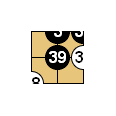
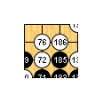
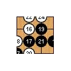
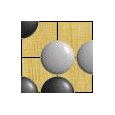
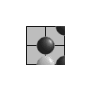

Drago - Print and export examples
Drago - Print and export examples
This page gives some examples for the printing abilities offered by Drago.
Unicode
Printing and exporting supports Unicode. This is demonstrated here with a Japanese and a Chinese commented games.
PDF with a Dosaku game with Japanese comments by smile_ace
PDF with a Nie Weiping game with Chinese comments from flygo
The following gives some examples for the printing styles defined when installing Drago, as well as for some other features deserving some comments.
Default style
Default options for printing. Prints the end position of the current game with a full page figure.

SingleGame style
Dedicated to print the current game, one figure every N moves (default 50), giving emphasis to the first figure. The value N may be changed in the One figure every N moves edit box.

GameCollection style
Dedicated to print the end position of all the games in a collection file.

FusekiCollection style
Dedicated to print the position at a given move, default position 50, of all the games in a collection file. The position may be changed in the Position at move number edit box.

InfoCollection style
Dedicated to print only game information. The selection of the printed information is done with the Include information/Format edit box.
ProblemCollection style
Dedicated to print initial positions of the problems in a collection file, here with 5 figures per line given the boardsize.

SolutionCollection style
Dedicated to print problem solutions, with all variations, for a problem collection.

Relative numbers
When printing variations, it can be hard to identify from which figure comes the variation if not explained in the comments or figure names. Using relative numbers, by checking Relative numbers in the Figure title panel, can help. For instance, "Diagram 1.2 (10-18)" in the following example means "second variation of figure 1, variation of move 10".
Using figure names and explicit numbering
To identify variations, it is also possible to give convenient name to figures, with the Figures panel of the Edit/Insert control. To be closer to book printing, variations may be numbered from 1 with the Move numbers from option in the same control.
Credits
SGF files are coming from: